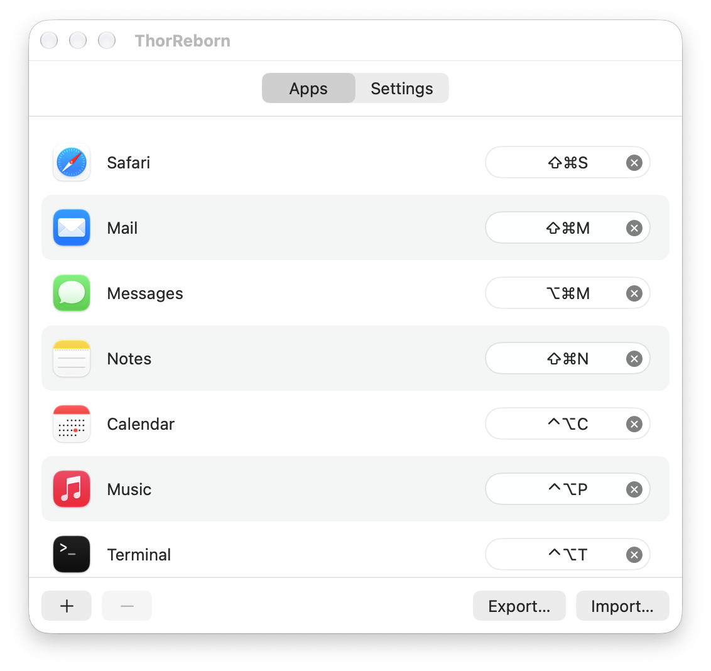

ThorReborn lives in your menu bar and switches to any app with a single keystroke. Press it again to hide the app.

Give each app you use a shortcut, and never hunt for a window again.
A shortcut opens the app if it isn't running, brings it forward if it is, and hides it if it's already in front.
Search everything in your Applications folders and anything Spotlight knows about, then record a shortcut for it.
If a shortcut is already taken by another app in your list, ThorReborn asks before moving it.
Turn all shortcuts off from the menu, or double-press a modifier key to pause them for a moment.
Optional launch at login. Hide the menu bar icon too, and bring it back with ⇧⌃⌥⌘T.
Export and import your shortcuts as JSON. Files from the original Thor import directly.
Takes about a minute. ThorReborn isn't notarized by Apple yet, so macOS asks you to confirm the first launch.
xattr -dr com.apple.quarantine /Applications/ThorReborn.app
ThorReborn is a from-scratch rewrite of Thor by Alvin Zhu, in Swift 6 and SwiftUI. It keeps Thor's behavior and file format and is MIT licensed like the original. Found a bug? Open an issue.